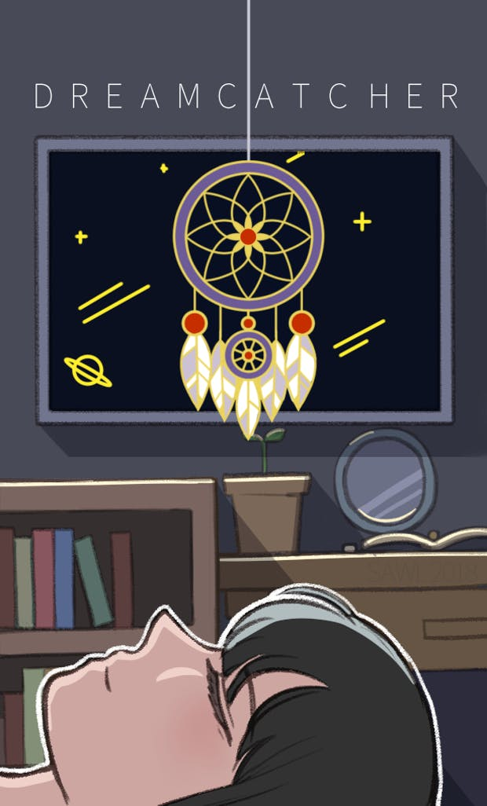
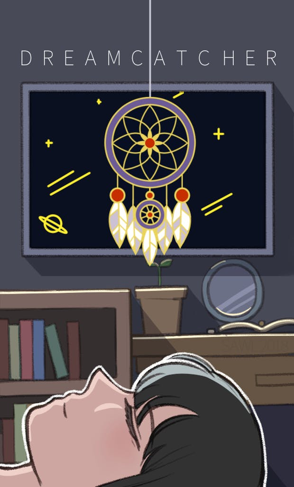

저소득층 생리대 지원 크라우드 펀딩
 

저소득층 생리대 지원 뱃지 판매 프로젝트의 총괄과 디자인을 맡았다. 당시 속해있던 동아리 Dreamcatcher에서의 드림캐쳐는 두 가지 의미를 담고 있었는데, 1. 하나는 악몽을 잡아주는 일반적인 드림캐쳐 조형물의 의미, 2. 둘째는 꿈을 찾는 진로 탐색으로써의 의미이다. 뱃지 디자인은 이런 동아리의 의미에서 출발했다. 생리대가 부족한, 악몽보다 더 악몽같은 현실을 드림캐쳐가 조금이나마 걸러줄 수 있기를. 그리고 그런 일상의 고통이 해결되면서 우리 또래의 여성 청소년들이 보다 자신의 꿈과 진로를 성취하기 위한 노력에 집중할 수 있는 환경이 조성되기를 바라는 마음을 디자인에 녹여냈다. 특히 신경 쓴 부분은 뱃지와 배경지와의 조화였다. 소녀의 방을 주제로 하여, 뱃지가 고정되었을 때 방 창문에 드림캐쳐가 걸려있는 듯한 모습이 연출되도록 했다.